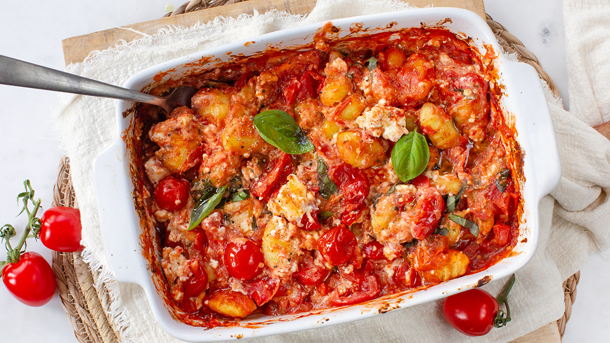

gnocchi-feta-oven

Ingredienten
- 500 gr gnocchi
- 400 gr kerstomaten uit blik
- 1 theelepel Italiaanse kruiden
- 150 gr feta
- 1 snuf peper en zout
- Boter of olie om in te vetten
Bereiding
- Verwarm de oven op 200 graden.
-
Vet een ovenschaal in en giet hier het blik met kerstomaatjes in. Snijd
de tomaatjes in partjes en toe ook in de ovenschaal.
-
Strooi de Italiaanse kruiden, peper (en optioneel zout) erover en doe de
gnocchi erbij. Schep alles goed door elkaar.
- Leg het blok feta in het midden en bak ca. 15 minuten in de oven.
-
Prak de feta iets met een vork en roer dan door de gnocchi. Doe een
handje verse basilicum erbij en schep erdoor.
- Tip: lekker met pittige olijfolie erover.